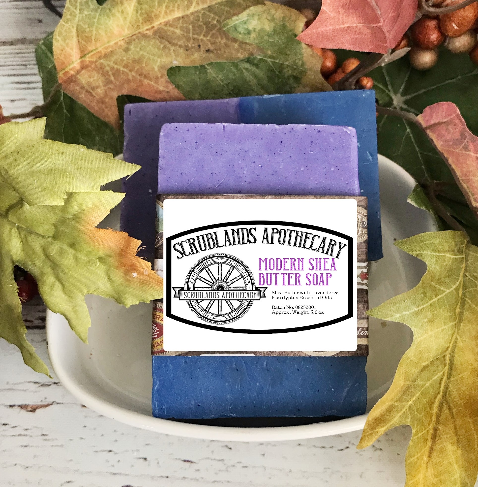
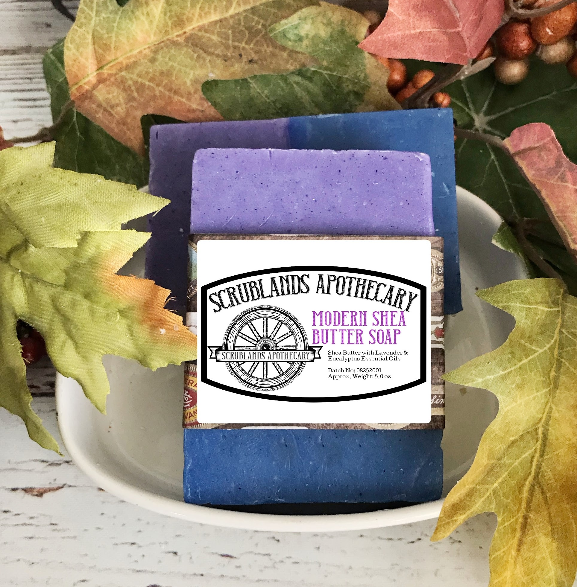

Shea Butter Soap
sheaButterDescription


sheaButterDescription
Gritty Tea Tree Soap is a rugged minty, effervescent soap bar. The soap is formulated with a coffee scrub and activated charcoal layer designed to deeply cleanse the skin. The soap is particularly effective at deep cleaning oily skin. To offset the coffee scrub, shea butter is added to saturate and soothe the skin. Two ounces of Unrefined Yellow Shea Butter per pound of soap are added to saturate and alleviate stressed skin. Tea Tree Essential Oil is added to give a refreshing, vibrant aroma. Tea Tree Soap is a rugged, robust soap for the working man. All Scrublands Apothecary soap is handmade in the back country of North Carolina. Scrublands Apothecary will guarantee you are %100 satisfied with your purchase or your money back.
** Allergy Warning: People with skin sensitivities or allergies should first test the soap on a small spot of the skin and stop using it if any irritation occurs
** No Detergents, No Sodium Lauryl Sulfate, No Harsh Chemicals, No Sulfates
** Soap is shrink wrapped to protect and preserve soap purity and freshness
Approximate Weight Per Soap Bar: 6.0 oz.
** Local pick up is available to customers that are located near Gastonia, North Carolina. Message me if you want to make a purchase and pick it up locally. I will remove the shipping costs from the purchase and schedule a location and time to pick up your soap. Thanks.
Most importantly, Tea Tree Essential Oil is a natural antibacterial, anti-fungal, and antiviral. Gritty
Sea Green Description asdasdasdasdasd